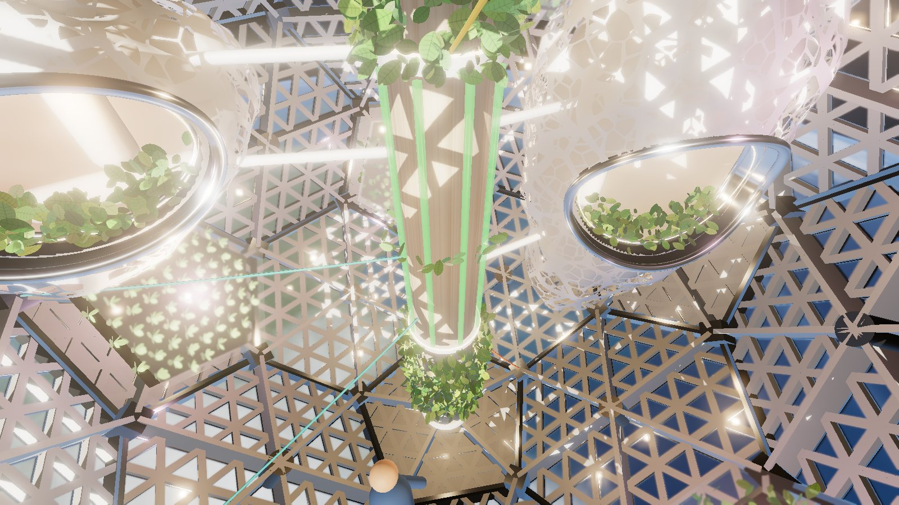
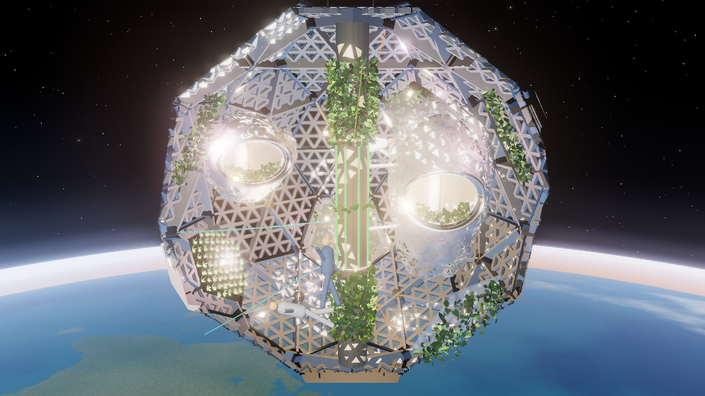
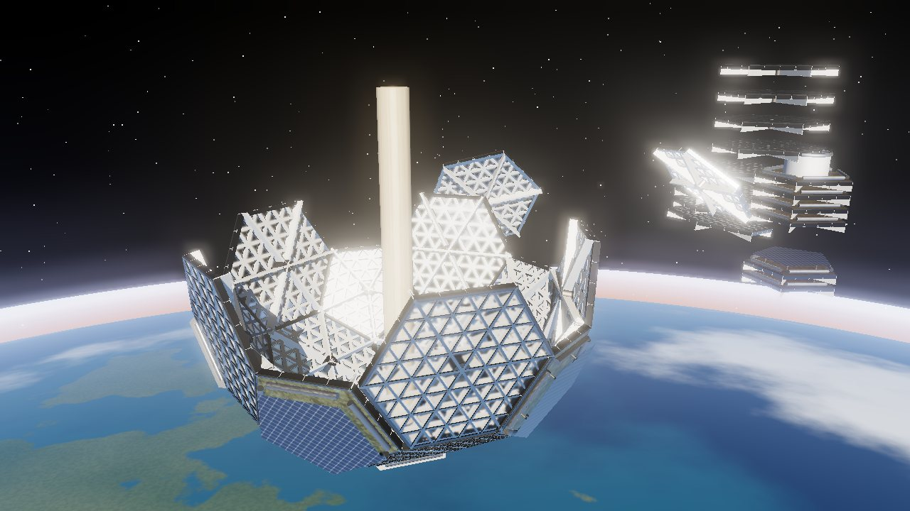

Human-Centric Space Architecture is a feasibility study for a mostly transparent observation facility in low Earth orbit. Six visitors at a time, one orbit per visit: ninety minutes of sunrise, Earth, night and stars, seen through twenty glass walls.
Team access About the projectThe station is a truncated icosahedron, 11.15 metres across, made of 32 flat panels. The twenty hexagons are windows, each built from 96 panes of borosilicate glass held in an aluminium grid. The twelve solid pentagons carry solar arrays and inflatable shields that unroll over the windows.
Inside there is no floor and no up or down. A central column carries power, water and plants; soft pods hang from it for time alone with the view, and greenhouse alcoves grow greens to taste. The team is testing the glass, the seams and a single panel at Brown in 2026 and 2027.



The full site, the 3D model, the drawings and the test results are for the team, our advisor and partners. Enter the password you were given.
Sponsors, press and researchers: write to Manos Theofanous at emmanouel_theofanous@brown.edu for access.